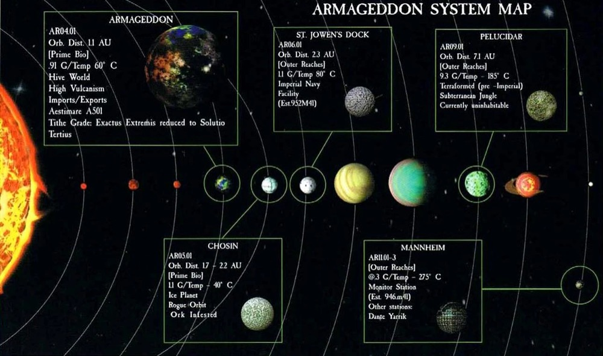
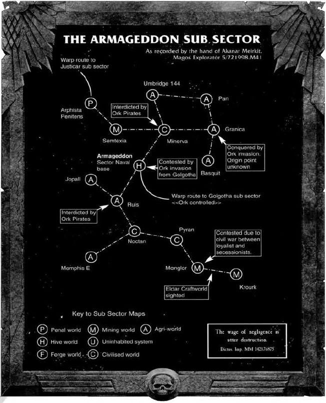
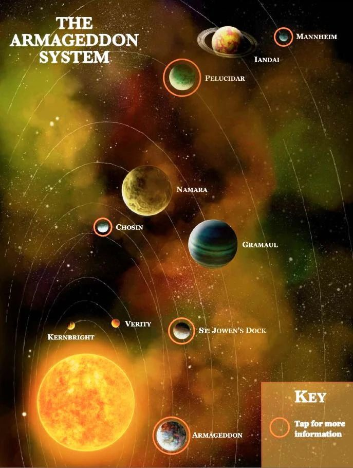

Armageddon Sector
| Armageddon Sector | |
|---|---|
 Survey chart of the Armageddon system, with the Hive World at its centre Artwork © Games Workshop | |
| Segmentum | Segmentum Solar |
| Sector capital | Armageddon, a Hive World |
| Sub-sectors | Armageddon, Desedna and Paleoth, Golgotha, Justicar, Voss |
| Notable worlds | Armageddon, Chosin, Pelucidar, St. Jowen's Dock, Mannheim |
| Governing body | The Overlord of Armageddon under the Administratum; the Imperial Navy and Astra Militarum in the sector's defence |
| Status (as of M42) | Imperial hold on Armageddon after the Third War; Ork remnants and Chaos forces still active in parts of the sector |
The Armageddon Sector is an Imperial sector of the Segmentum Solar, lying to the galactic north-east of Terra. It is named for the Hive World of Armageddon, which lies at its centre and is the fourth planet of its star's ten-planet system. Armageddon is one of the Imperium's great industrial powers, and its weapon factories have supplied the Astra Militarum for millennia. Its strategic importance has made it the target of several major invasions.[1]
The sector's wars are among the best known in the Imperium. The Wars for Armageddon were fought in the First War, the Second War and the Third War against the forces of Chaos and the Orks. The Third War, fought against the Warlord Ghazghkull Thraka, was the largest Ork invasion recorded in the Imperium's history.[1][2]
History
[edit]Armageddon
[edit]The planet of Armageddon has been one of the Imperium's main industrial worlds for millennia. Its vast hive cities produce arms and materiel in great quantity, and its stockpiles have made it a target. The hive world is governed by an Overlord, who answers to the Administratum, and it maintains a large Planetary Defence Force.[1]
First War for Armageddon
[edit]The First War for Armageddon is the least well known of the three. It began with a wave of strange events and armed rebellion in the hive cities, which were quickly put down on the continent of Armageddon Secundus but proved harder to end on Armageddon Prime. The Planetary Defence Force was caught unprepared when the space hulk Devourer of Souls entered the system carrying a Chaos army.[1][a]
The forces of the World Eaters Legion, led by Angron, invaded the planet in the course of the war. Angron was halted at the river lines of Armageddon Prime, which later became the defensive positions the Imperium held in later wars.[1]
Second War for Armageddon
[edit]The Second War for Armageddon began in 941.M41, when Ghazghkull Thraka invaded the world at the head of a massive Ork WAAAGH! At that time Armageddon was ruled by Overlord Herman von Strab, whose failings allowed Ghazghkull to conquer the subcontinent of Armageddon Prime more easily than Angron had. Ghazghkull's forces overran the hive city of Infernus and, after bitter fighting, the hive city of Helsreach fell to the Orks.[1]
Third War for Armageddon
[edit]The Imperium believed Ghazghkull defeated, but on the Feast of the Emperor's Ascension, 998.M41, his hordes landed on Armageddon once more. The Third War was the greatest of the Armageddon wars. Ghazghkull led an Ork WAAAGH! many times larger than any before it, and his fleets smashed the defending Imperial fleet and landed across the planet's surface.[1]
The defenders of Armageddon were better prepared than before, but the war was long and costly. The Imperial armies of the sector, supported by several Space Marine Chapters, fought the Orks across the hive cities and the ash wastes, and the war lasted well into the Era Indomitus.[2]
Geography
[edit]

The sector surrounds the star that gives Armageddon its name. Its worlds are arranged as in a normal system, with inner worlds of ash and industry and outer worlds of ice and ports. The Armageddon Sub-sector is the industrial heart of the region, and the Golgotha Sub-sector and the Voss Sub-sector hold the sector's outer worlds.[1]
Notable worlds
[edit]Armageddon is the Hive World at the centre of the sector and the industrial hub of both the Armageddon Sub-sector and the wider region. Pelucidar is a sub-surface jungle world on the sector's outer edge, and St. Jowen's Dock is an Imperial Navy facility in the outer system. Chosin is an ice world that has been infested by Orks, and Mannheim is a monitor station on the system's outer edge.[1]
Governance
[edit]The Overlord of Armageddon rules the hive world, and the Administratum's sector registers record its tithe. The Imperial Navy keeps its facilities at St. Jowen's Dock and Mannheim, and the Astra Militarum and the Planetary Defence Force are raised from the sector's worlds.[3]
Military
[edit]The sector's defence is shared between the Planetary Defence Force, the Astra Militarum and the Imperial Navy. Its regiments fought through the Third War alongside Space Marine Chapters that were sent to the sector.[4]
Timeline
[edit]| Date | Event |
|---|---|
| Millennia before 444.M41 | Armageddon becomes an industrial world of the Imperium[b] |
| 444.M41 | The First War for Armageddon: Chaos army arrives with the space hulk Devourer of Souls |
| 444.M41 | Angron's World Eaters invade and are halted at the river lines of Armageddon Prime |
| 941.M41 | The Second War for Armageddon begins under Ghazghkull Thraka |
| 941.M41 | Helsreach Hive falls to the Orks |
| 998.M41 | The Third War for Armageddon begins on the Feast of the Emperor's Ascension |
| Era Indomitus | The Third War continues; Imperial forces hold the hive cities |
| M42 | Armageddon is under Imperial hold; Ork remnants and Chaos forces remain in parts of the sector |
See also
[edit]Notes
[edit]References
[edit]- ^ a b c d e f g h i Codex: Grey Knights (5th Edition), pg. 13. Games Workshop. Codex: Orks (4th Edition), pg. 25. Games Workshop.
- ^ a b Warhammer 40,000: Rulebook (4th Edition), pg. 34. Games Workshop. Codex: Armageddon (3rd Edition), pp. 13-32. Games Workshop.
- ^ Codex: Chaos Space Marines (3rd Edition, 2nd Codex), pg. 8. Games Workshop. Epic Armageddon Rulebook (3rd Edition). Games Workshop.
- ^ Battlefleet Gothic Magazine 12, "Battlefleet Armageddon - Scenarios, Sub-Plots, Battlezones, Sector Maps, Fleet Lists," pp. 4-19. Battlefleet Gothic Magazine 14, "Battlelfeet Armageddon - Battlezones, Scenarios, Sub-Plots, Battlefleet Armageddon, The Armageddon Sector," pp. 4-19.